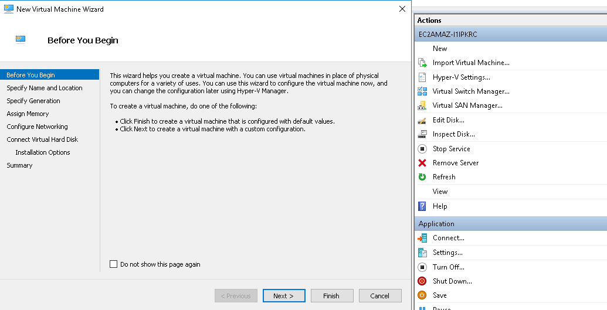
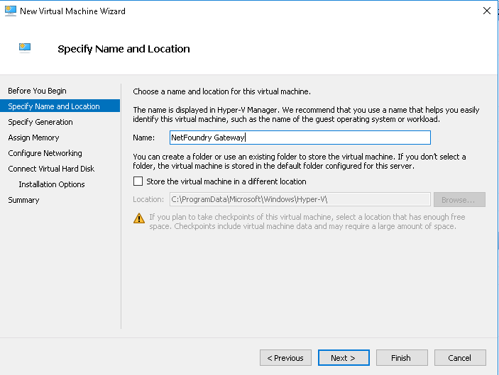
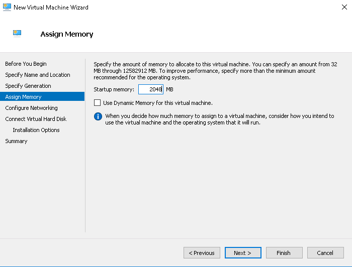
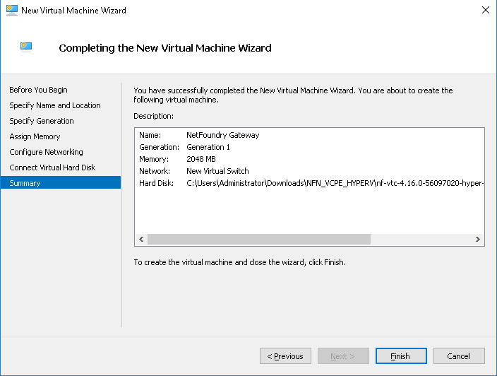
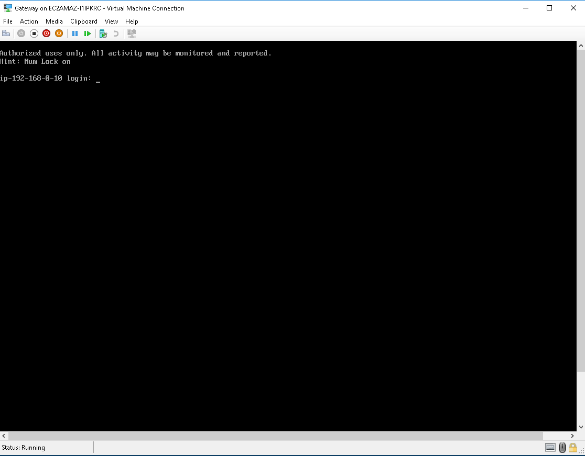

Getting Started
How to Launch a NetFoundry Gateway on Hyper-V 2016/2019@
Prerequisites
Windows 2016 server already running
All powershell commands require Administrative Privileges
Installing Hyper-V@
Installing Binaries@
If not already installed, you'll need to install hyper-v
Issue the following command to install hyper-v this will restart your server
Install-WindowsFeature -Name Hyper-V -IncludeManagementTools -Restart
Installing a VMSwitch@
You'll need to have at least one VMSwitch if you don't already have one.
Please note, we are adding an Internal switch for setup with a NAT server.
Issue the following command to install a new "Internal" VSwitch
New-VMSwitch -SwitchName "Hyper-VSwitch" -SwitchType Internal
Configuring NAT@
In order to create a NAT IP Address, you need to associate it with the Hyper-V VMSwtich(Hyper-V Virtual Ethernet Adapter), like the one created above. To see the current adapters, issue the following command
Get-NetAdapter
Use the result to create a new NATIPAddress on the specified Interface
New-NetIPAddress -IPAddress 192.168.0.1 -PrefixLength 24 -InterfaceIndex 5
How you can tell hyper-v what to allow through the Net IPAddresss
New-NetNat -Name MyNATnetwork -InternalIPInterfaceAddressPrefix 192.168.0.0/24
Configuring DHCP@
Use the following command to install the dhcp feature:
Install-WindowsFeature -Name 'DHCP' -IncludeManagementTools
To create a new DHCP Scope:
Add-DhcpServerv4Scope -Name GuestIPRange -StartRange 192.168.0.10 -EndRange 192.168.0.20 -SubnetMask 255.255.255.0 -State Active
To adjust the DHCP Scope Options:
Set-DhcpServerv4OptionValue -ScopeId GuestIPRange -Router 192.168.1.1
Important
If the DHCP MMC snap-in shows an exclamation mark & doesn't show the scope, you might need to add a hosts entry in c:\windows\system32\drivers\etc\hosts Example entry:
192.168.0.1 {name of the server}
Creating a new Virtual Machine NetFoundry Gateway@
Download our Hyper-V image from the download site: Downloads
Unzip the file to access the VHD file.
Open the Hyper-V Manager

Click on "New" → "Virtual Machine..."

Name the Virtual Machine

Select "Generation 1"

Assign memory to the Virtual Machine

Assign the Virtual Machine to a VMSwitch

Point the downloaded VHD

Finish the Virtual Machine Setup

You can now start the VM
